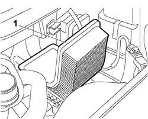
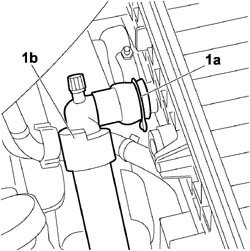
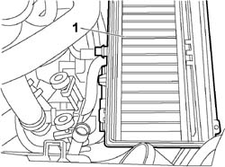
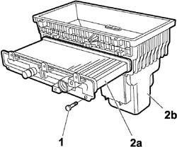

1080G59 ENGINE COOLANT / FAP SYSTEM AIR SUCKED (INTO AIR FILTER BOX) HEAT EXCHANGER - R.R.
- Path
- Procedures > 10 ENGINE > 1080 EXHAUST EMISSION CONTROL SYSTEM > 1080G F.A.P. EMISSION CONTROL SYSTEM > 1080G59 ENGINE COOLANT / FAP SYSTEM AIR SUCKED (INTO AIR FILTER BOX) HEAT EXCHANGER - R.R.
- Kind
- repair procedure (removal / refitting; the operation number is the code)
- Applies to
- engines: 2.2 16V JTD; all production periods
- Interactive page
- https://sloeber94.github.io/elrnDB-fUlss/en/#/179007147
Applies to: engines: 2.2 16V JTD; all production periods
 Removing
Removing
 Refitting
Refitting- Position a suitable container for collecting any leaks of engine coolant.
- Disconnect the negative battery terminal.
Description | Connector | |
|---|---|---|
Battery | A001 |
Op. 1080G58 AIR/COOLANT HEAT EXCHANGER FOR F.A.P. SYSTEM AIR CIRCUIT - R.R.
1 - Remove the filter element from the air filter casing.

Applies to: engines: 2.2 16V JTD; all production periods
1 - Release the securing clip (1a) and disconnect the coolant return pipe (1b) from the heat exchanger.

Applies to: engines: 2.2 16V JTD; all production periods
1. Release the air filter casing upwards and remove it from the vehicle.

Applies to: engines: 2.2 16V JTD; all production periods
1. Working at the bench, undo the fixing bolts.
2. Release the heat exchanger (2a) and remove it from the air filter casing (2b).

Applies to: engines: 2.2 16V JTD; all production periods
Refitting
Removing- Place the heat exchanger in its housing in the filter casing and tighten the fixing bolts.
- Place the air filter casing assembly in the engine compartment.
- Connect the engine coolant return pipe to the heat exchanger and fit the retaining clip.
- Fit the filter element in the air filter casing.
Op. 1080G58 AIR/COOLANT HEAT EXCHANGER FOR F.A.P. SYSTEM AIR CIRCUIT - R.R.
- Connect the negative battery terminal.
Description | Connector | |
|---|---|---|
Battery | A001 |